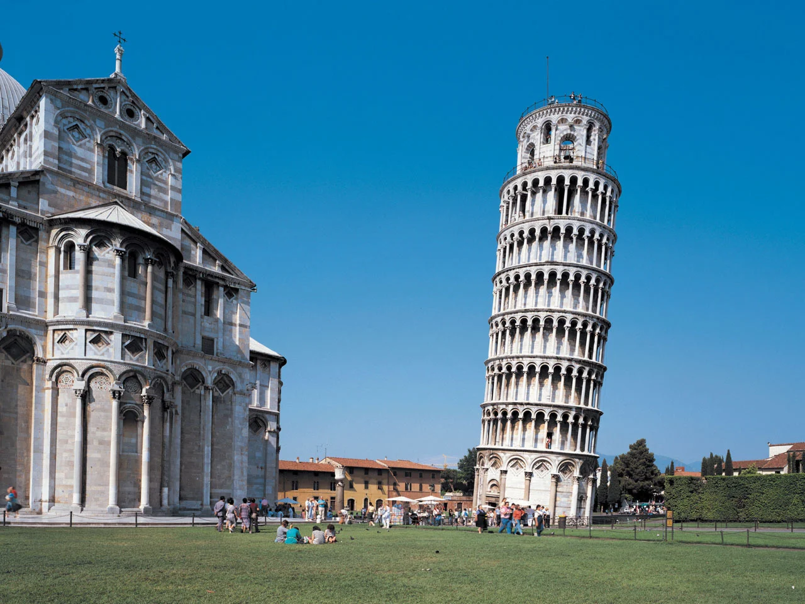

おすすめの世界遺産

ピサの斜塔
イタリアのピサ市にあるピサ大聖堂の鐘楼であり，ピサのドゥオモ広場に含まれる観光スポットである．
設計者は，ボナンノ・ピサーノ，ジェラルド・ダ・ピサ，ディオティサルヴィらの複数の建築家だ．ピサの斜塔は，第一礼拝堂の鐘楼として建設されましたが，その途中で傾いていることがわかり，建設が中断された，
高さは地上55.86m，階段は296段あり，重量は14.453tである．住居用のマンション(１階が約３ｍ)だと仮定すると，１５階建てくらいである．
ピザの斜塔の角度が傾いているの原因は簡単にいうと，建設中に地盤が柔らかかったためである．

ストーンヘンジ
イギリス・ウィルトシャーにある先史時代の巨大な石の環状遺跡。巨石の謎とその歴史は、多くの研究者と観光客を魅了しています。